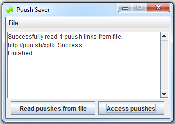

Stops your puushes from expiring. Download the latest version: https://github.com/dukky/PuushSaver/releases
A program designed to keep your puushes accessible for longer than the 1 month that puush will limit to on 1st August 2013.

Download the latest release.
Add your puush links one per line to puush.txt.